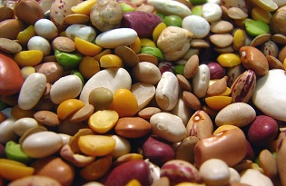
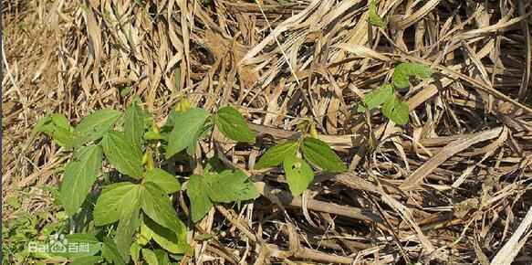

豆类的品种很多，主要有大豆、蚕豆、绿豆、豌豆、赤豆、 黑豆等。根据豆类的营养素种类和数量可将它们分为两大类。一类以黄豆为代表的高蛋白质、高脂肪豆类。另一种豆类则以碳水化合物含量高为特征，如绿豆、赤豆。鲜豆及豆制品，不但可做菜肴，而且还可以作为调味品的原料。
是扁豆属植物，为热带、亚热带地区常见栽培的豆类。多年生缠绕植物。小叶 3片，阔三角状卵形，托叶基部着生。花白色或紫色,2至多朵丛生于总状花序的节上。荚果矩圆形，扁平，边缘有小凸点；种子略扁，白色或紫黑色。嫩荚供蔬食，成熟种子含蛋白质21.5%，供食用。入药有去湿之功。
为大豆属植物，原产中国，古书记载的五谷，其中 黑豆 黑豆 “菽”即为大豆。《诗经》记载了中国古代周朝的农业情况，有“七月烹葵及菽”，“采菽采菽；筐之筥之”，说明大豆在当时农业生产上占有重要地位。大豆是从它的近缘种野生大豆驯化而来，栽培历史在5000年以上。由于大豆的经济价值高，20世纪以来世界各国已开始普遍种植。大豆的主要产区为中国的东北平原、华北平原和美国的中北部。
大豆为一年生直立草本,全株被毛。复叶有小叶3片；顶小叶卵形或椭圆形，侧小叶斜卵形。花小，白色或紫色,2～10余朵组成腋生的短总状花序。荚果带状长圆形，略扁，内有椭圆形的种子1～4颗。
大豆在豆类作物中蛋白质含量居首位，其中含有人体所必需的各种氨基酸，还有维生素A、B、C和D，并富含可食用的油脂，故为重要的蛋白质和油料作物。大豆的种子含蛋白质36～42%，油脂16～20%。用大豆制成的豆腐、豆芽和酱油是中国极普遍的副食品。豆油除供食用外，可制油漆、肥皂、甘油、润滑油，还可制人造羊毛，又为医药原料。大豆叶含蛋白质12～20%，与榨油后的麸饼均为优质饲料和肥料。
为蚕豆属植物，是最古老的农作物之一，在古代曾为人类的主要粮食，原产地中海及里海一带，现广植于世界各地。蚕豆一名出自《食物本草》，李时珍《本草纲目》谓其豆荚状如老蚕，故名。蚕豆为一年生或二年生直立草本；茎四棱柱形。偶数羽状复叶有2～6片椭圆形的小叶，无卷须。花白色带红而有紫斑，2～6朵组成腋生的短总状花序。荚果大而肥厚；种子椭圆形，扁平。其种子含蛋白质22～35%，淀粉43%，除食用外亦为制酱的原料。未熟的青蚕豆味鲜美，且含维生素A、B和C，为春季上等蔬菜。茎秆质软，含蛋白质10%，适于作青饲料，又为良好绿肥。
为豌豆属植物，栽培历史悠久，见于石器和铜器时代。《尔雅 红豆 红豆 》所称“戎菽”即指豌豆而言。豌豆为一年生攀缘草本。复叶顶端具分枝的卷须，有卵形或椭圆状长圆形的小叶4～6片；托叶比小叶大,斜卵形,基部有齿，半抱茎。花白色或紫红色，1～3朵组成腋生的总状花序。荚果带状长圆形，成熟时肿胀。根据荚果不同，豌豆可分为软荚种和硬荚种，前者鲜荚脆嫩，作蔬菜食用，又分小荚和大荚两个类型。硬荚种又称红花豌豆或麦豆,以食种子为主,荚多纤维而硬，不堪食用。种子含蛋白质22～34%，嫩荚和鲜种子中还含有糖分、矿物质盐类以及维生素A、B和C,鲜荚、嫩梢均作蔬菜食用，后者名“龙须菜”。茎、叶含蛋白质较谷类秆、叶多 3倍，为牲畜优良饲料，亦可作绿肥。
为豇豆属植物，栽培很广。绿豆名出自《开宝本草》，“绿豆圆小者佳。粉作饵,炙食之良”。世界上绿豆生产以中国占第一位，其他主要产区有印度、伊朗和菲律宾等。绿豆为一年生直立草本，全株被粗长毛。复叶由3片阔卵形的小叶组成，托叶大，阔卵形,盾状着生。花黄色，10～25朵丛生于总状花序的先端。荚果线状圆柱形,有10～15颗小的绿色的种子。种子供食用,含蛋白质25.59%，淀粉53.6%，富于营养,磨粉可做糕饼，又可制成粉丝，为中国传统副食品之一。种子洗净浸水中遮光发芽，名绿豆芽或芽菜，供蔬食。种子入药，有清凉解毒、利尿明目之效。枝、叶为良好绿肥。
豇豆属的豆类作物除绿豆以外，常见栽培的还有赤豆、豇豆和眉豆等。赤豆名出《唐本草》,又名小豆,原产中国；印度、朝鲜和日本也有栽培。种子含蛋白质约20%，可作粮食或制豆沙用以做糕点馅。豇豆名出《本草纲目》，又名豆角，在中国栽培极广。取其嫩荚供蔬食，荚长者可达60～70厘米，以豆荚绿色深浅不同分为青豆角和白豆角两种类型。眉豆又名饭豇豆，荚果较豇豆短，种子供食用，含蛋白质23.1%，淀粉61.4%。